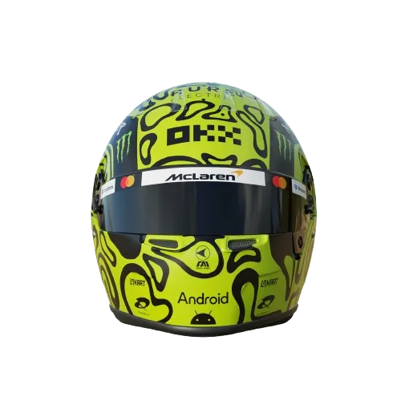
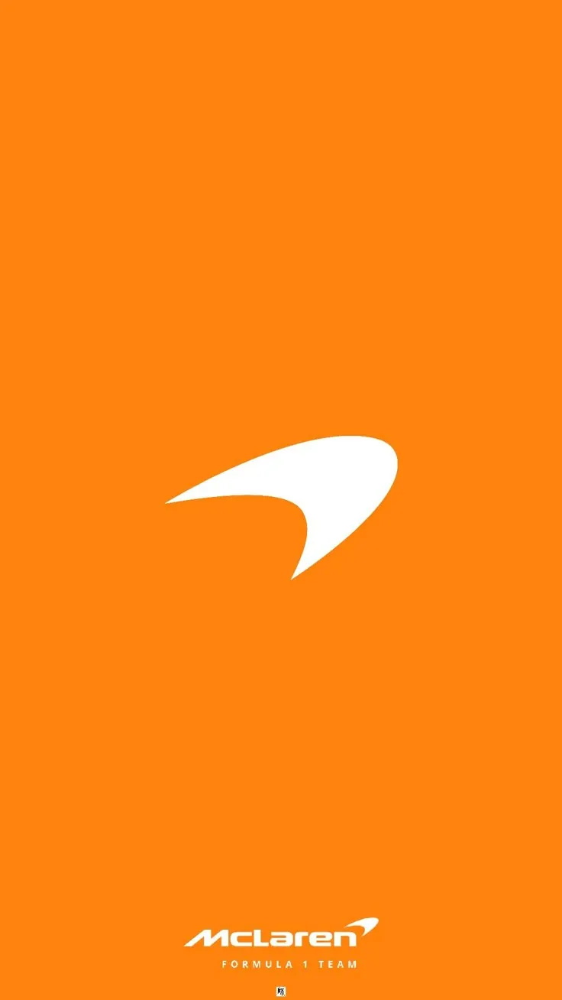
Lando Norris #4
- Posición: 1°
- Escudería: McLaren
- Puntos: 357
- Victorias: 6
- Poles: 5
- Mejores 5: 17
- Mejores 10: 18
- País: Gran Bretaña
- Fecha de nacimiento: 13/11/1999

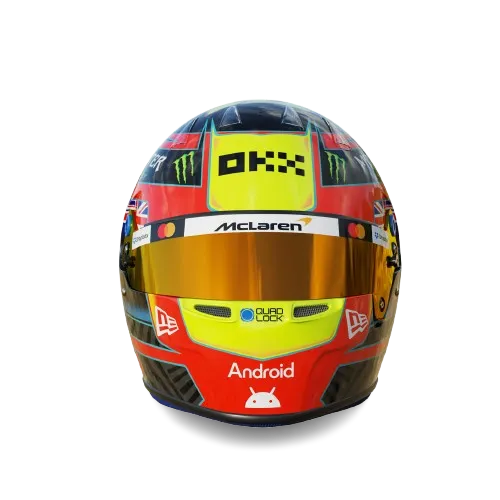
Oscar Piastri #81
- Posición: 3°
- Escudería: McLaren
- Puntos: 291
- Victorias: 2
- Poles: 1
- Mejores 5: 14
- Mejores 10: 17
- País: Australia
- Fecha de nacimiento: 06/04/2001

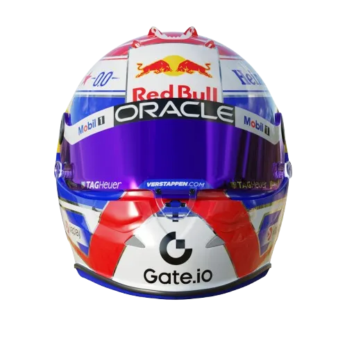
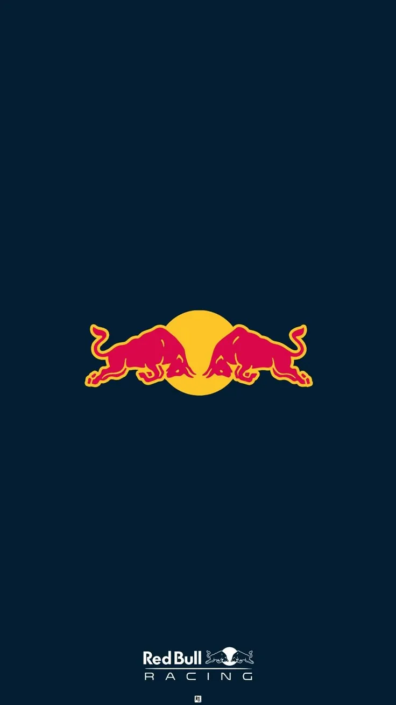
Max Verstappen #1
- Posición: 2°
- Escudería: Red Bull Racing
- Puntos: 345
- Victorias: 9
- Poles: 10
- Mejores 5: 18
- Mejores 10: 19
- País: Países Bajos
- Fecha de nacimiento: 30/09/1997

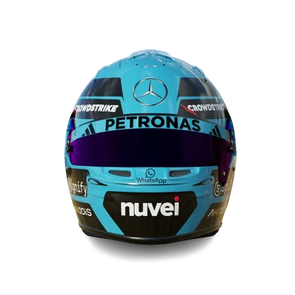
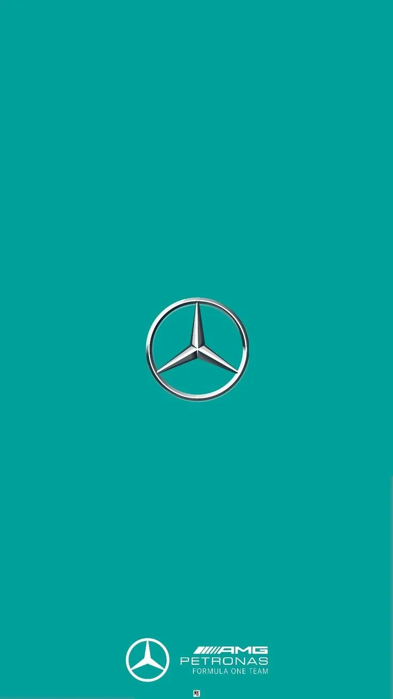
George Russell #63
- Posición: 4°
- Escudería: Mercedes
- Puntos: 258
- Victorias: 2
- Poles: 5
- Mejores 5: 15
- Mejores 10: 19
- País: Gran Bretaña
- Fecha de nacimiento: 15/02/1998

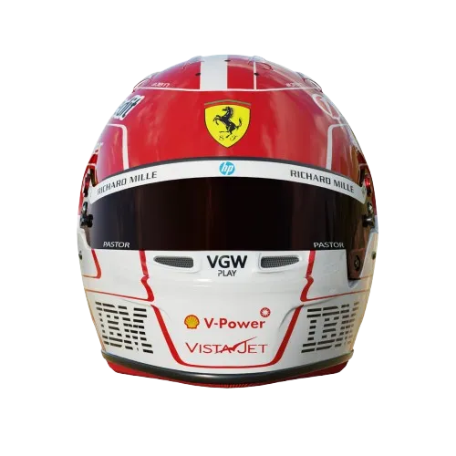
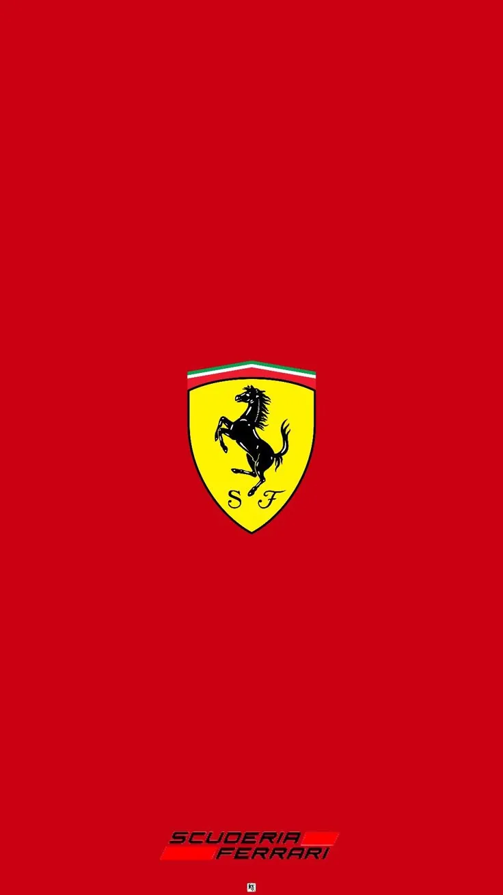
Charles Leclerc #16
- Posición: 5°
- Escudería: Ferrari
- Puntos: 210
- Victorias: 0
- Poles: 1
- Mejores 5: 12
- Mejores 10: 17
- País: Mónaco
- Fecha de nacimiento: 16/10/1997

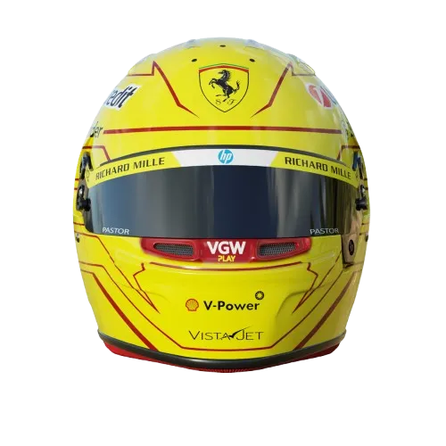
Lewis Hamilton #44
- Posición: 6°
- Escudería: Ferrari
- Puntos: 146
- Victorias: 0
- Poles: 0
- Mejores 5: 6
- Mejores 10: 17
- País: Gran Bretaña
- Fecha de nacimiento: 07/01/1985

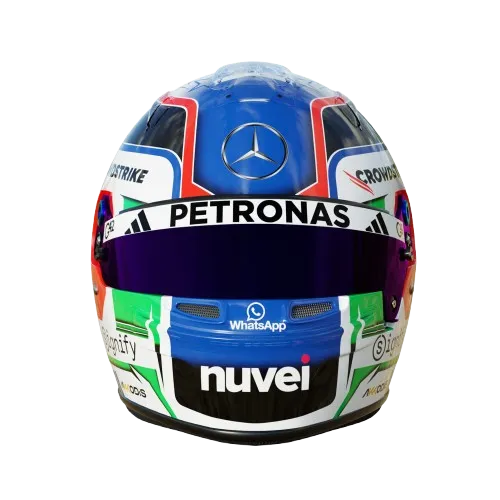
Kimi Antonelli #12
- Posición: 7°
- Escudería: Mercedes
- Puntos: 97
- Victorias: 0
- Poles: 0
- Mejores 5: 4
- Mejores 10: 11
- País: Italia
- Fecha de nacimiento: 25/08/2006

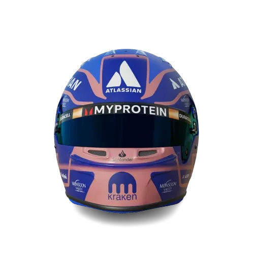
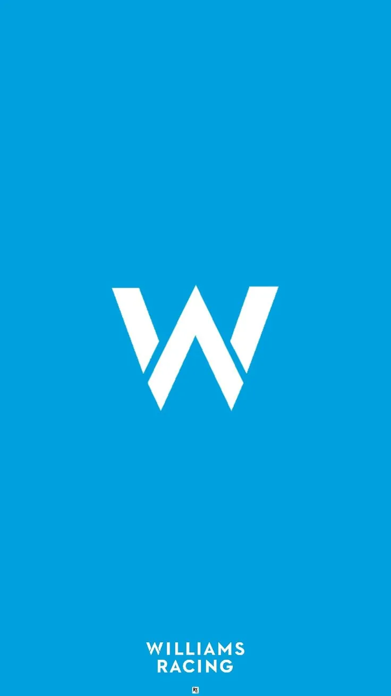
Alexander Albon #23
- Posición: 8°
- Escudería: Williams
- Puntos: 73
- Victorias: 0
- Poles: 0
- Mejores 5: 4
- Mejores 10: 11
- País: Tailandia
- Fecha de nacimiento: 23/03/1996

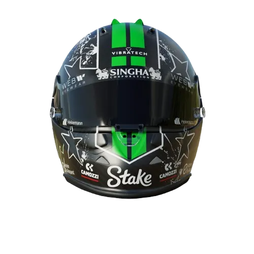
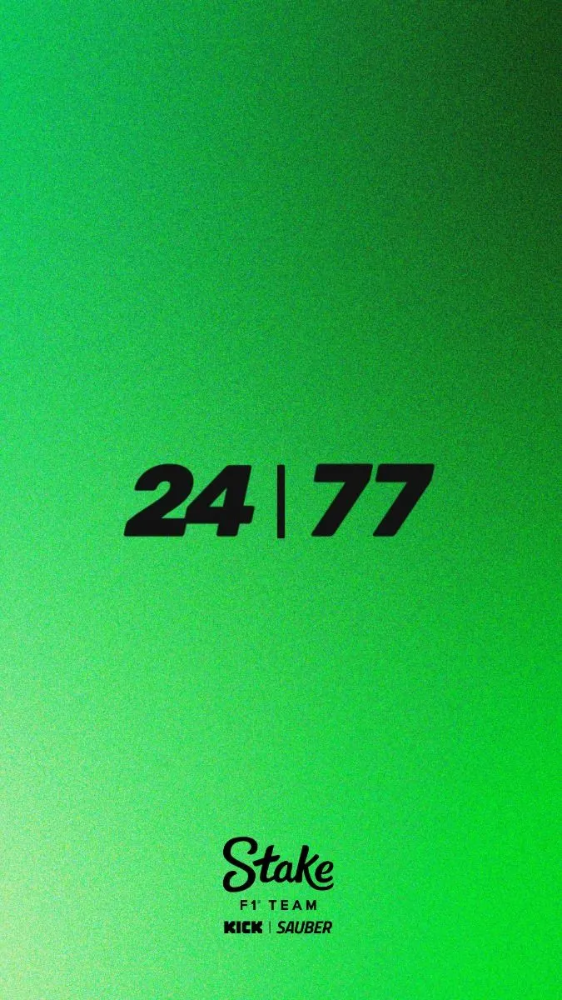
Nico Hülkenberg #27
- Posición: 9°
- Escudería: Kick Sauber
- Puntos: 41
- Victorias: 0
- Poles: 0
- Mejores 5: 2
- Mejores 10: 6
- País: Alemania
- Fecha de nacimiento: 19/08/1987

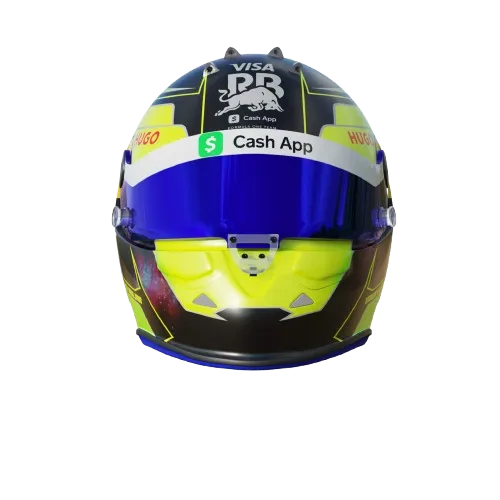
Isack Hadjar #6
- Posición: 10°
- Escudería: Red Bull
- Puntos: 39
- Victorias: 0
- Poles: 0
- Mejores 5: 1
- Mejores 10: 8
- País: Francia
- Fecha de nacimiento: 28/09/2004

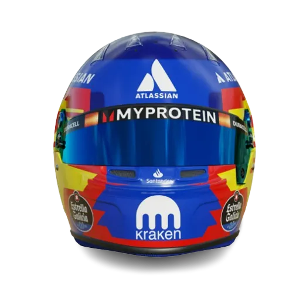
Carlos Sainz #55
- Posición: 11°
- Escudería: Williams
- Puntos: 38
- Victorias: 0
- Poles: 0
- Mejores 5: 1
- Mejores 10: 8
- País: España
- Fecha de nacimiento: 01/09/1994

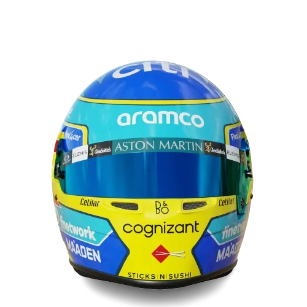
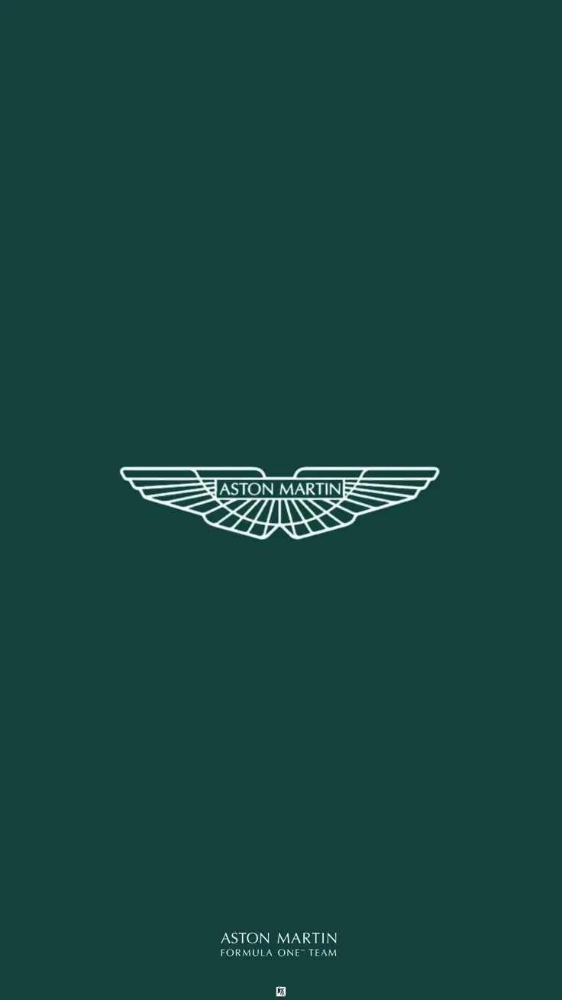
Fernando Alonso #14
- Posición: 12°
- Escudería: Aston Martin
- Puntos: 37
- Victorias: 0
- Poles: 0
- Mejores 5: 1
- Mejores 10: 8
- País: España
- Fecha de nacimiento: 29/06/1981

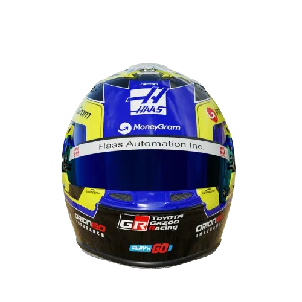
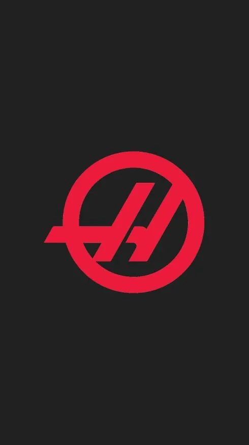
Oliver Bearman #87
- Posición: 13°
- Escudería: Haas
- Puntos: 32
- Victorias: 0
- Poles: 0
- Mejores 5: 1
- Mejores 10: 7
- País: Gran Bretaña
- Fecha de nacimiento: 08/05/2005

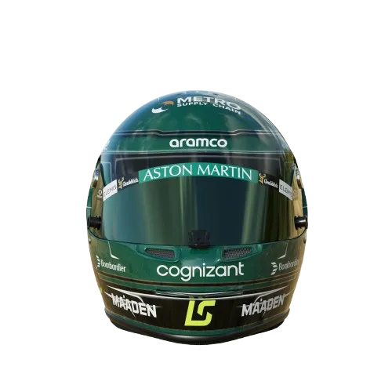
Lance Stroll #18
- Posición: 14°
- Escudería: Aston Martin
- Puntos: 32
- Victorias: 0
- Poles: 0
- Mejores 5: 0
- Mejores 10: 5
- País: Canadá
- Fecha de nacimiento: 29/10/1998

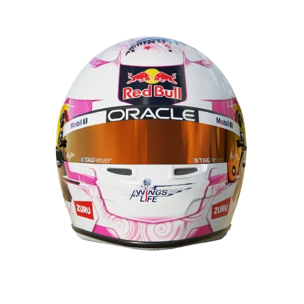
Liam Lawson #40
- Posición: 15°
- Escudería: Red Bull
- Puntos: 30
- Victorias: 0
- Poles: 0
- Mejores 5: 1
- Mejores 10: 5
- País: Nueva Zelanda
- Fecha de nacimiento: 11/02/2003

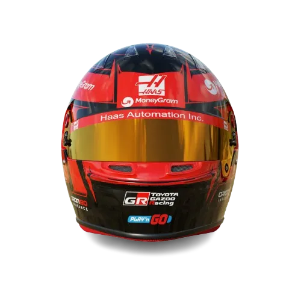
Esteban Ocon #31
- Posición: 16°
- Escudería: Haas
- Puntos: 30
- Victorias: 0
- Poles: 0
- Mejores 5: 1
- Mejores 10: 7
- País: Francia
- Fecha de nacimiento: 17/09/1996

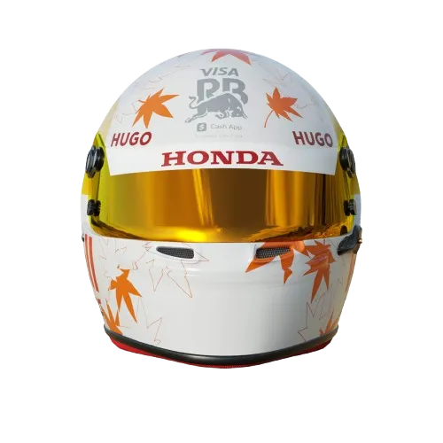
Yuki Tsunoda #22
- Posición: 9°
- Escudería: RB
- Puntos: 71
- Victorias: 0
- Poles: 0
- Mejores 5: 2
- Mejores 10: 10
- País: Japón
- Fecha de nacimiento: 11/05/2000

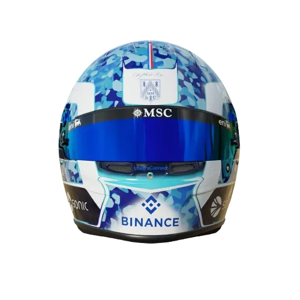
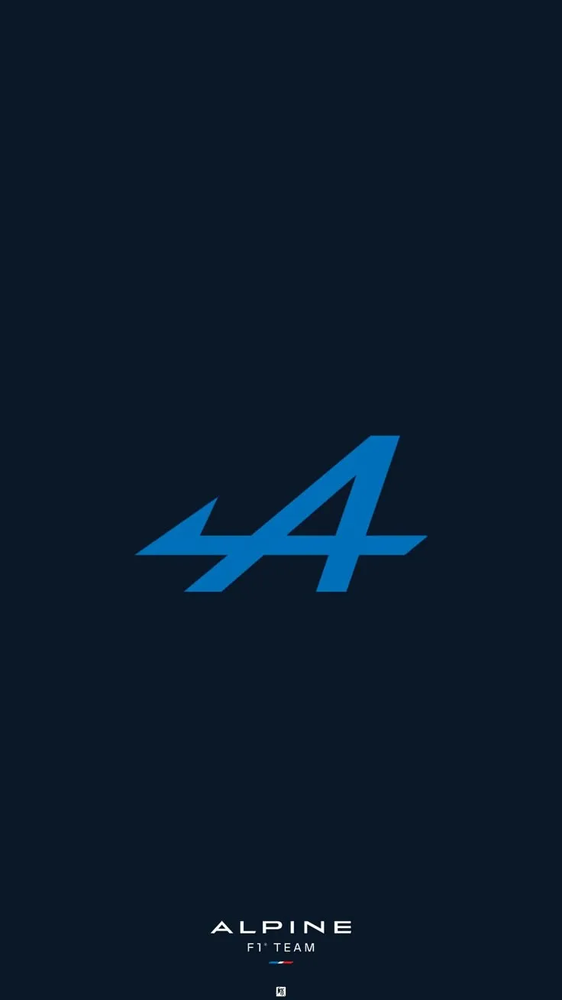
Pierre Gasly #10
- Posición: 18°
- Escudería: Alpine
- Puntos: 20
- Victorias: 0
- Poles: 0
- Mejores 5: 0
- Mejores 10: 4
- País: Francia
- Fecha de nacimiento: 07/02/1996

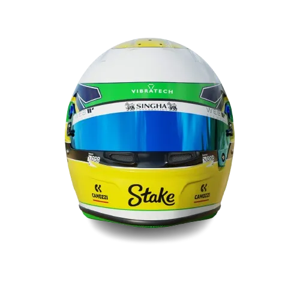
Gabriel Bortoleto #5
- Posición: 19°
- Escudería: Kick Sauber
- Puntos: 19
- Victorias: 0
- Poles: 0
- Mejores 5: 0
- Mejores 10: 5
- País: Brasil
- Fecha de nacimiento: 14/10/2004

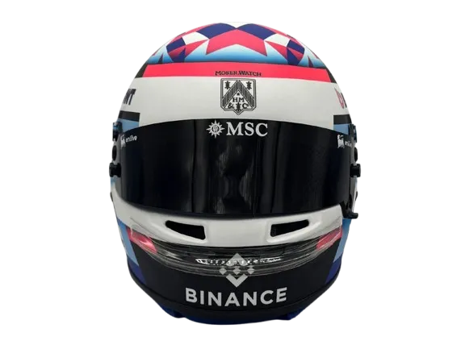
Franco Colapinto #43
- Posición: 20°
- Escudería: Alpine
- Puntos: 0
- Victorias: 0
- Poles: 0
- Mejores 5: 0
- Mejores 10: 0
- País: Argentina
- Fecha de nacimiento: 27/05/2003